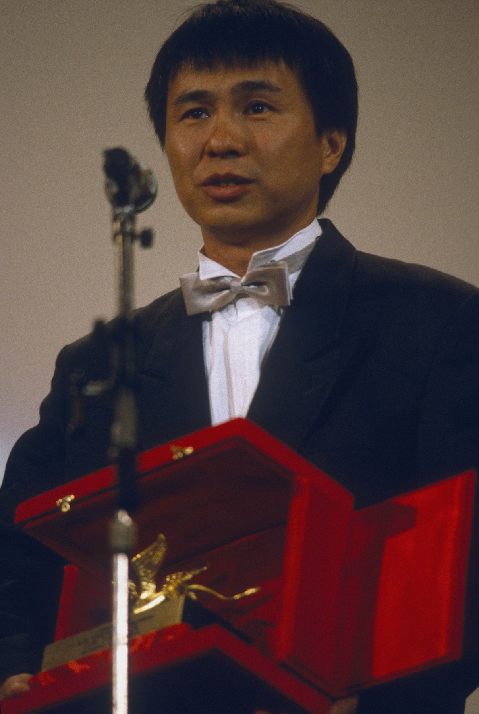
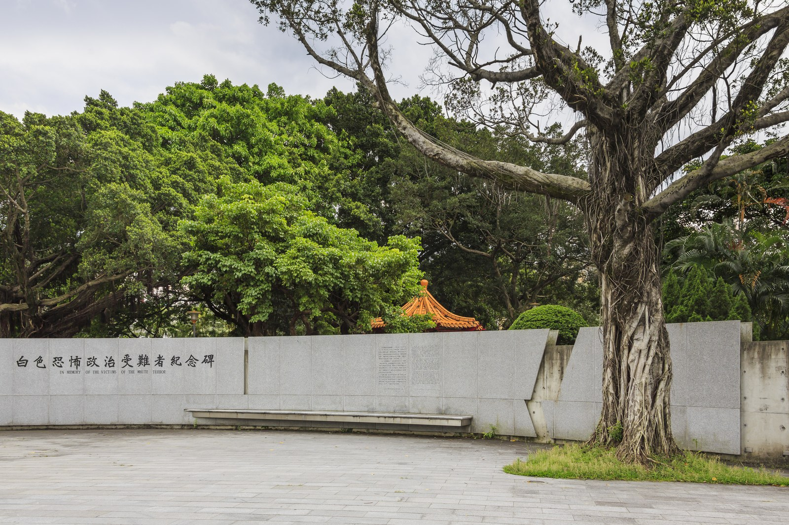
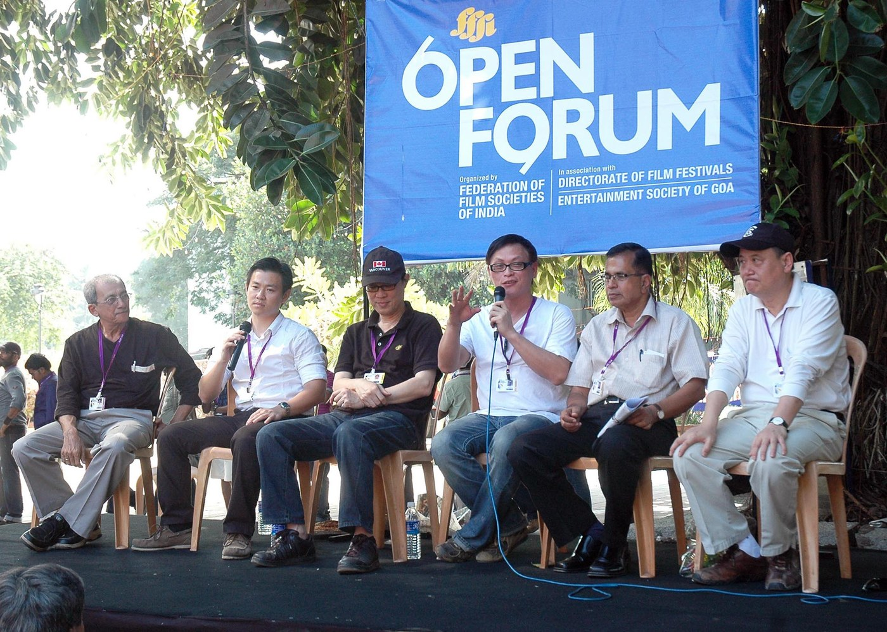
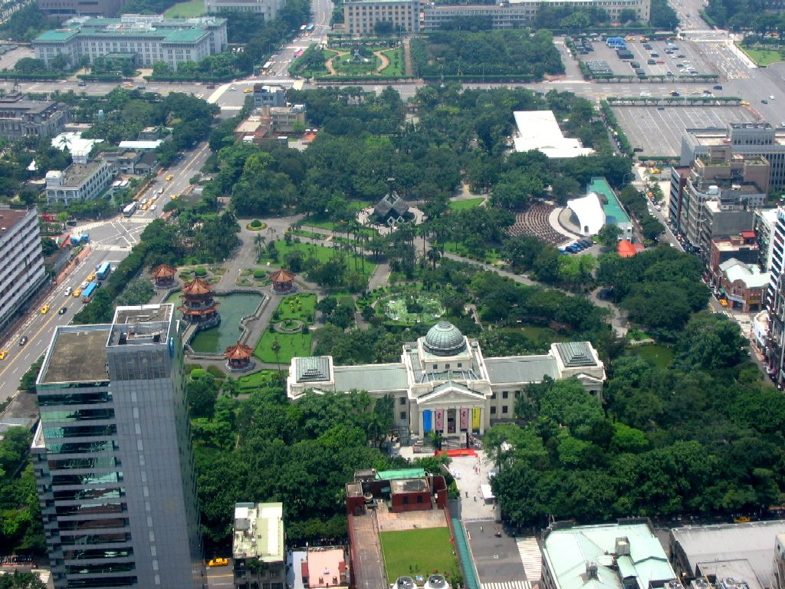
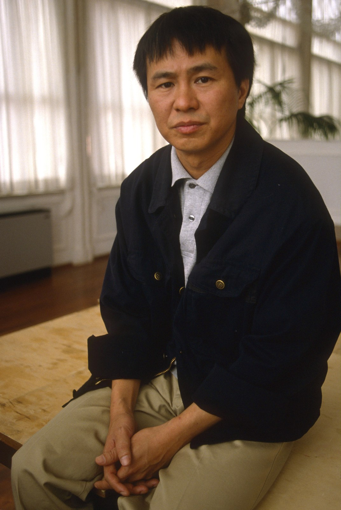
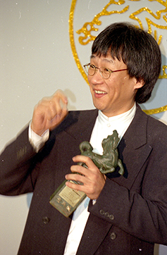
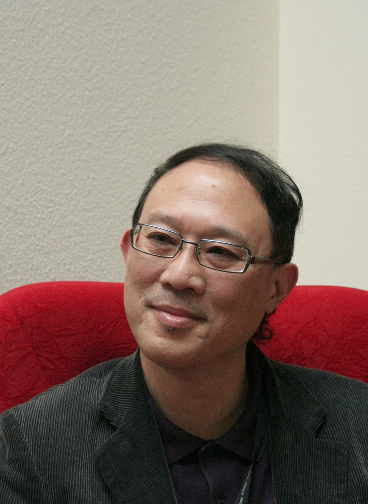
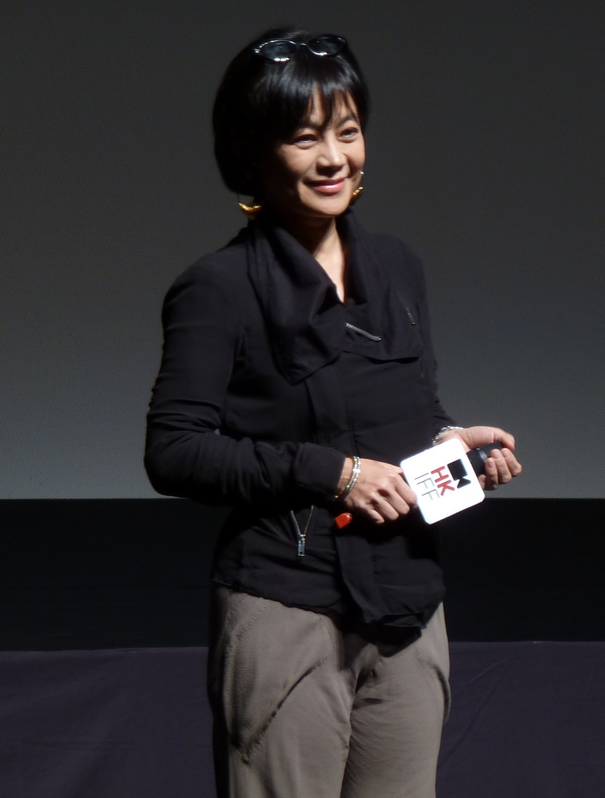
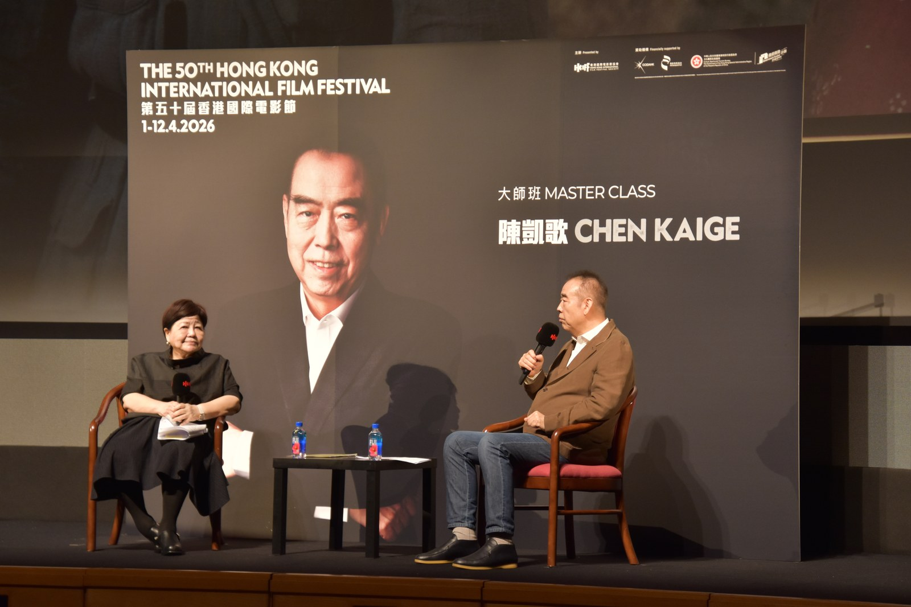

Wednesday · Film
(c. 1982–1990s): local lives after martial-era studio habits
Under the had taught audiences and commercial genres. In the 1980s a younger generation, still often CMPC-backed, turned the camera onto streets, coming-of-age, and histories that had been hard to name — then learned to travel through festivals.

{kind=link}
“” () is a historians’ and critics’ name for a cluster of films and people from about 1982 into the early 1990s, not a union card and not a single manifesto that started the cameras. Many of the early features were still financed or released through the . ended on 15 July 1987; the films did not flip overnight with that date. The 1987 “” (also called the “” manifesto) was a public fight over policy, media, and criticism as much as a style sheet — and many writers treat it as a hinge toward the end of the first wave, not its birth certificate. is a name that traveled; was the American industrial mode ending into blockbusters in the same calendar years. Neither is a template this lesson copies shot for shot. Film stills are usually still in copyright, so the pictures here are festival portraits, later memorials, and free exteriors, captioned as what they actually show. No AI people.
Select any words, or tap a dotted term.
- 1960s–70s Studio habits ’s line and commercial genres (including melodramas) under . Hong Kong and Hollywood imports take much of the box office. “National cinema” often means Mandarin, party-aligned, and exportable to overseas Chinese markets.
- 1982 In Our Time omnibus (): segments by , , , and . Widely treated as the opening date for .
- 1983 Early CMPC turns () and the omnibus (). , , and others move from script and segment work into features that look and sound unlike .
- 1985–87 Taipei films / manifesto / martial law ’s (1985) and (1986). ’s (1986). The is drafted around late 1986 and published January 1987. is lifted 15 July 1987.
- 1989 Venice ’s wins the at — the first Taiwanese film to take the prize. reaches a wide screen.
- 1991–93 Late first wave / Second New Wave edge ’s (1991). ’s (1993). ’s early features begin to define a aftershock in the early 1990s.
Before
CMPC habits, martial law, and what “national cinema” meant
Before the phrase stuck, the film business had a clear center of gravity. The — () — was the major state-linked studio. From the 1960s it promoted : films that borrowed the look of everyday life while keeping the social picture clean enough for a martial-law culture industry. Beside that line sat commercial genres audiences already knew how to buy, including melodramas, comedies, and patriotic pictures. Hong Kong action and comedy imports, and Hollywood bookings, took a large share of the box office. A domestic Mandarin film was often asked to be national in a narrow sense: speak the language of official culture, travel to overseas Chinese markets, and not open subjects the and the censors preferred closed.
, in force from 1949 until 15 July 1987, is the political frame for that studio habit. It does not mean every film was a propaganda reel. It does mean scripts moved through guidance, and that public history — especially in 1947 and the long — was not ordinary commercial subject matter. National cinema in those decades was less a critics’ aesthetic category than a policy mood: cinema as cultural work for the , produced inside institutions the could see. When audiences drifted toward Hong Kong and Hollywood, the problem for was industrial as well as ideological. By the late 1970s and early 1980s the studio’s own managers and writers were looking for cheaper, younger, more local films that might bring people back without simply copying a Hong Kong gag reel.

{kind=link}
That inheritance matters for how to read the “before.” had already claimed the word realism. New Cinema would claim a different realism: sound and rooms that were not moral examples, speech in Taiwanese as well as Mandarin where the story needed it, and — later — histories the studio system had kept off the marquee. The break was not a sudden private indie scene. It began, awkwardly, inside ’s own attempt to renew product.
The era
1982 as a door, 1987 as weather, festivals as a path
The conventional opening date is 1982: , a omnibus with four segments by , , , and . The Chinese title means a story that unfolds with time; the English title nods at Hemingway. The industrial fact is simpler. , under managers such as and with writers including and in the pipeline, backed young directors to shoot everyday lives across decades of postwar Taiwan. The film’s success — limited booking windows and all — showed that a quieter, more observational domestic picture could still move tickets. It also gave critics a cluster they could name.
1983 widened the door. , directed by with among the writers, treated coming-of-age as something you could watch without a sermon. packaged three adaptations directed by , , and — moved onto film with still on the letterhead. These are not underground tapes. They are studio-backed turns that changed what a local film was allowed to look like: non-professional or understated acting, , that let a street or a kitchen run longer than would usually permit.

,_in_Panjim,_Goa_on_November_29,_2010.jpg){kind=link}
Through the mid-1980s the look hardened into a critical vocabulary. ’s (1986) followed young people from into work. ’s (1985) and (1986) treated the capital’s apartments, offices, and chance meetings as form, not postcard. Critics talked about the as a concrete choice: stay with a corridor, a meal, a mute photographer’s waiting, instead of cutting every glance into . is a useful phrase for the same habit when the subject turns political — let a family absorb the news, rather than stage a leader’s speech. None of this required a single switch on 15 July 1987, when ended. The lift mattered as context: more room to speak, more risk that films would test what could be shown. It was weather, not a clapperboard.
The cultural fight that does have a date on paper is the of early 1987 — sometimes called the “” manifesto — drafted around a late-1986 gathering associated with and published in January 1987. Roughly fifty filmmakers and cultural workers argued that policy swung unclearly among propaganda, industry, and culture; that mass media preferred star gossip to film as art; and that much local criticism pushed Hong Kong and Hollywood models. They asked for space for . Many historians read the document less as a birth certificate than as a hinge: the first wave already existed, domestic returns were softening, and the argument was about whether that cinema would be allowed to survive as culture rather than only as a failed commercial genre. Festival paths — especially European competitions — became one practical answer when bookings thinned.

{kind=link}
The field
Many names, and three films to look at closely
The field is wider than two auteurs. and are the names international festivals repeated first. Beside them: and on ; in literary and historical films; in the script department and as ’s collaborator; as ’s other constant writer; on ; as actor and producer in ’s and across the industry’s star-producer lane. belongs at the edge of this lesson — early 1990s aftershock, not the 1982 omnibus door. The point of listing is industrial: New Cinema was a cohort overlapping , literature, and later independent production, not a club with one address.
(1989) is the film to deepen first. , with and writing, follows the Lin family across the mid-1940s: Japanese surrender, Nationalist arrival, , and the first cold years of repression. plays Wen-ching, a deaf-mute photographer; much of what politics does to the household arrives as letters, absences, and rooms that hold still. The here is not decoration. It is how you watch people wait for news they cannot control. gave the film the in September 1989 — the first Taiwanese — which meant the island’s forbidden history traveled as festival prestige at the same moment domestic audiences argued over it. locations later became tourism; the film’s fact is older and colder than the souvenir shops.

{kind=link}
’s films are the second deepening. (1985) pairs with as a former baseball player drifting through property deals and old loyalties while the city rebuilds around them. (1986) crosses a novelist, a doctor, a photographer, and a young woman whose phone calls puncture other lives; is mapped as simultaneous rooms rather than a single hero’s route. (1991) then widens the canvas to early-1960s youth — school uniforms, street gangs, American rock — and a murder case that becomes national allegory without ceasing to be a long, concrete adolescence. Against , ’s camera often holds a hallway or a night street until social geometry becomes visible. Urban form is the subject: who owns the apartment, who still talks about baseball, who gets left in the frame after the cut that never comes.

{kind=link}
The third deepening is the CMPC-to-festival path itself. Early New Cinema needed the state studio’s schedules and money. International recognition — for , later Cannes attention for , Criterion and archive restorations decades on — is how the films kept circulating when Taiwan’s commercial screens preferred other product. and show ’s other mode: rural and colonial memory, ’s testimony, trains and glove-theatre stages, still built from long looking. ’s presence in ’s first feature reminds you that stars and producers shared the same years; ’s career reminds you the omnibus was a group door. Theory talk that stays honest stays concrete: a is a decision about time; is a decision about whose kitchen the news enters; both are arguments with continuity cinema’s habit of explaining too fast.

{kind=link}

{kind=link}
Elsewhere
Same years: Fifth Generation, Hong Kong waves, Hollywood after New Hollywood
Look out from , not from a worksheet that assigns one peer per continent. In the People’s Republic, the was leaving the Beijing Film Academy into features: ’s (1984), with Zhang Yimou photographing northern landscape and folk form, became an international marker the same decade and were redefining Taiwanese screens. The state, the censorship map, and the market were different. The shared fact is calendar and festival: both cinemas learned that European competitions could carry films their home booking systems undervalued.

{kind=link}
had already moved from television (especially TVB) into features around 1979 — , Tsui Hark, and others — with a Second Wave carrying into the 1980s. Those films shared a language market and a ferry distance with ; they did not share ’s martial-law brief. For Taiwanese producers the practical pressure was often Hong Kong’s commercial pull on local screens. That is a regional industrial fact, not a claim that equals .
In the United States, was already ending. The director-driven studio bets of the 1970s had tipped, after Jaws and Star Wars, toward wide-release blockbusters; Heaven’s Gate (1980) is the usual tombstone in that American story. By the mid-1980s Hollywood’s loud export mode was the blockbuster and the high-concept booking, not Easy Rider. did not grow as a franchise of that American decade. It grew as a local answer to habits, Hong Kong imports, and a political thaw — while remained a circulating name for young cinema, useful as analogy and misleading as origin myth. This lesson’s related links are for those honest comparisons: as a traveling label; as the Hollywood mode that had already turned toward blockbusters when ’s new films were finding their feet.
After
Second New Wave, commercial drought, festival auteurs
By the early 1990s the first-wave energy had scattered. Domestic commercial cinema entered a long drought; Hong Kong and Hollywood continued to dominate bookings. ’s early features — Rebels of the Neon God, then (1994), which itself took a — are usually filed as : even emptier rooms, bodies that wait, as a recurring presence. and became festival auteurs whose films might matter more in Paris or New York than in a Saturday multiplex. ’s (2000) arrived as a late summation. Later Taiwanese festival careers grew from this split: local screens thin, international prestige thick. The New Cinema years remain the hinge when local lives and difficult history got a camera style equal to them.
{kind=link}
A question
A question to keep asking
If a film holds a hallway or a family meal longer than would usually allow, what history is it asking you to notice that a faster cut would skip?
Fun fact
A City of Sadness was the first Taiwanese Golden Lion
At the 46th in September 1989, ’s won the — ’s top prize. It was the first Taiwanese film to take that award. The film had already made a different kind of history at home: it was the first Taiwanese feature to put the of 1947 openly on screen for a wide audience, two years after ended. Festival travel and domestic argument arrived in the same season.